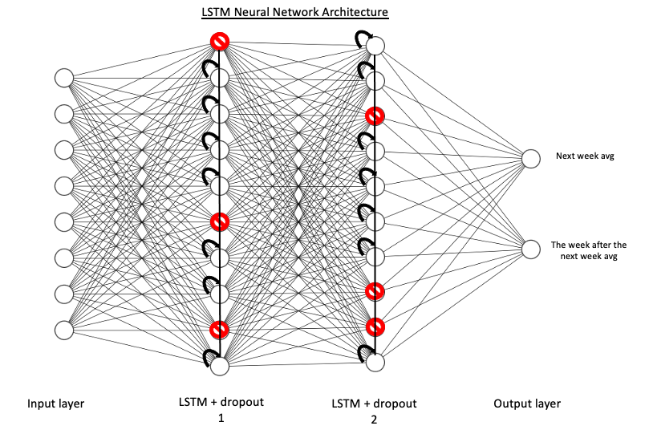

Machine Learning time series forecasting (LSTM) on OMRON connect data
May 2021 ~ Internship at OMRON Healthcare Europe
Length: 0.5 mo (at 1.0 FTE)
Programming languages: Python (Pandas, time, datetime, Math, Matplotlib,
NumPy, scikit-learn, TensorFlow)
Data: Over 4 million blood pressure measurements registered via OMRON connect by
approximately 35 000 users, containing the recorded systolic, the device used, the time and date
of each measurement
Problem description:
Build a multivariate, multistep, single-output LSTM that predicts the following two weekly averages
of systolic measurements of active OMRON connect users
Approach:
On top of the pre-processing done in the previous project (see the first paragraph from Approach and
Results on Big Data Analysis with PySpark
on OMRON connect data), the predictor features which will not be known ex-post were removed,
such as the diastolic and pulse. However, it was assumed that the users would perform measurements
with the same device because about 1% of the users changed their devices while using the app.
Hence, the device-related variables were kept. Then, the measurements of each user were aggregated
per week and structured relatively to their start date to allow modeling for multiple users.
Afterward, the categorical features were one-hot encoded, and the continuous ones were standardized
or normalized.
Prior to modeling, the data was reshaped as tensors. Then, a sliding window function for creating
lags and the validation dataset was designed. Subsequently, the sequential model was built to
have four hidden layers, namely two pairs of one LSTM layer with 100 units followed by a
dropout layer to prevent overfitting. The simplified architecture of the neural network is
visible below.

Finally, the main hyperparameters of the model, namely learning rate, optimizer, number of batches,
epochs, and steps per epoch, were tuned using the Grid Search method with time-series
cross-validation.
Results:
Before the predictions could be compared against the withhold test set, they were scaled back to
their original magnitude. Consequently, a baseline that naively estimates the next two weekly
averages of each user as the last one registered was implemented. Its RMSE score with the
test data was 7.31, while the LSTM model scored an RMSE of 4,97. Therefore, the LSTM network
performed 47% better than the naive baseline.